Ці Правила відповідно до Закону України “Про дорожній рух” встановлюють єдиний порядок дорожнього руху на всій території України. Інші нормативні акти, що стосуються особливостей дорожнього руху (перевезення спеціальних вантажів, експлуатація транспортних засобів окремих видів, рух на закритій території тощо), повинні грунтуватися на вимогах цих Правил.
В Україні установлено правосторонній рух транспортних засобів.
Учасники дорожнього руху зобов’язані знати й неухильно виконувати вимоги цих Правил, а також бути взаємно ввічливими.
Кожний учасник дорожнього руху має право розраховувати на те, що й інші учасники виконують ці Правила.
Дії або бездіяльність учасників дорожнього руху та інших осіб не повинні створювати небезпеку чи перешкоду для руху, загрожувати життю або здоров’ю громадян, завдавати матеріальних збитків.
Особа, яка створила такі умови, зобов’язана негайно вжити заходів до забезпечення безпеки дорожнього руху на цій ділянці дороги та вжити всіх можливих заходів до усунення перешкод, а якщо це неможливо, попередити про них інших учасників дорожнього руху, повідомити уповноважений підрозділ Національної поліції, власника дороги або уповноважений ним орган.
Використовувати дороги не за їх призначенням дозволяється з урахуванням вимог статей 36-38 Закону України “Про автомобільні дороги”.
Водії зобов’язані бути особливо уважними до таких категорій учасників дорожнього руху, як велосипедисти, особи, які рухаються в кріслах колісних, та пішоходи. Усі учасники дорожнього руху повинні бути особливо обережними до дітей, людей похилого віку та осіб з явними ознаками інвалідності.
Обмеження в дорожньому русі, крім передбачених цими Правилами, можуть бути запроваджені в установленому законодавством порядку.
Особи, які порушують ці Правила, несуть відповідальність згідно із законодавством.
Терміни, що наведені у цих Правилах, мають таке значення:
автобус – автомобіль з кількістю місць для сидіння більше дев’яти з місцем водія включно, який за своєю конструкцією та обладнанням призначений для перевезення пасажирів та їх багажу із забезпеченням необхідного комфорту та безпеки;
автомагістраль – автомобільна дорога, що:
– спеціально побудована і призначена для руху транспортних засобів, не призначена для в’їзду на прилеглу територію або виїзду з неї;
– має для кожного напрямку руху окремі проїзні частини, відокремлені одна від іншої розділювальною смугою;
– не перетинає на одному рівні інші дороги, залізничні і трамвайні колії, пішохідні і велосипедні доріжки, шляхи проходу тварин, має огородження на узбіччях і розділювальній смузі та обгороджена сіткою;
– позначена дорожнім знаком 5.1;
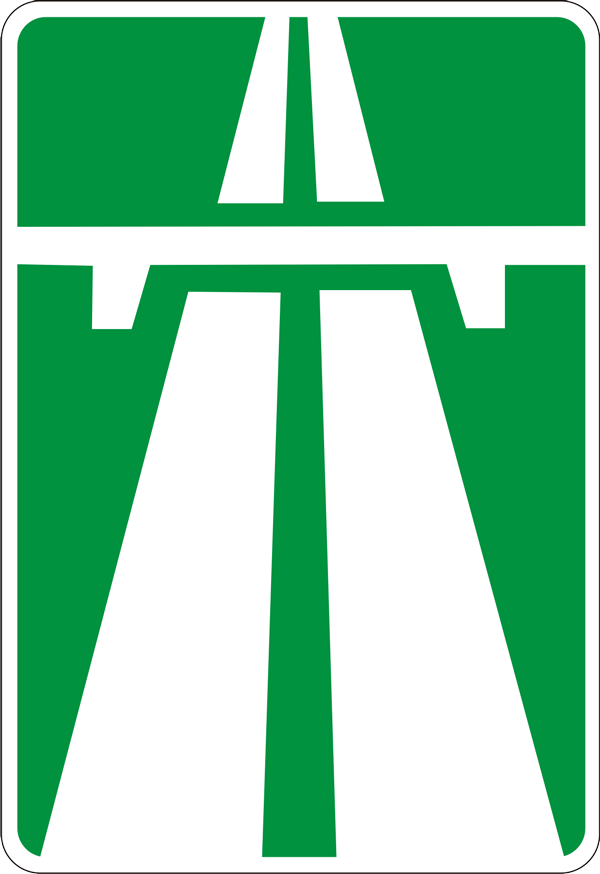
5.1
автомобільна дорога, вулиця (дорога) – частина території, зокрема в населеному пункті, з усіма розташованими на ній спорудами (мостами, шляхопроводами, естакадами, надземними і підземними пішохідними переходами) та засобами організації дорожнього руху, призначена для руху транспортних засобів і пішоходів та обмежена по ширині зовнішнім краєм тротуарів чи краєм смуги відводу. Цей термін включає також спеціально побудовані тимчасові дороги, крім довільно накатаних доріг (колій);
автомобільні дороги державного значення – автомобільні дороги загального користування, до яких належать міжнародні, національні та регіональні автомобільні дороги, які позначені відповідними дорожніми знаками;
автопоїзд (транспортний состав) – механічний транспортний засіб, що з’єднаний з одним або кількома причепами за допомогою зчіпного пристрою;
безпечна дистанція – відстань до транспортного засобу, що рухається попереду по тій самій смузі, яка у разі його раптового гальмування або зупинки дасть можливість водієві транспортного засобу, що рухається позаду, запобігти зіткненню без здійснення будь-якого маневру;
безпечний інтервал – відстань між боковими частинами транспортних засобів, що рухаються, або між ними та іншими об’єктами, за якої гарантована безпека дорожнього руху;
безпечна швидкість – швидкість, за якої водій має змогу безпечно керувати транспортним засобом та контролювати його рух у конкретних дорожніх умовах;
буксирування – переміщення одним транспортним засобом іншого транспортного засобу, яке не належить до експлуатації автопоїздів (транспортних составів) на жорсткому чи гнучкому зчепленні або способом часткового навантаження на платформу чи на спеціальне опорне пристосування;
вантажний автомобіль – автомобіль, який за своєю конструкцією та обладнанням призначений для перевезення вантажів;
велосипед – транспортний засіб, крім крісел колісних, що приводиться в рух мускульною силою людини, яка знаходиться на ньому;
велосипедист – особа, яка керує велосипедом;
велосипедна доріжка – виконана в межах дороги чи поза нею доріжка з покриттям, що призначена для руху на велосипедах і позначена дорожнім знаком 4.12;
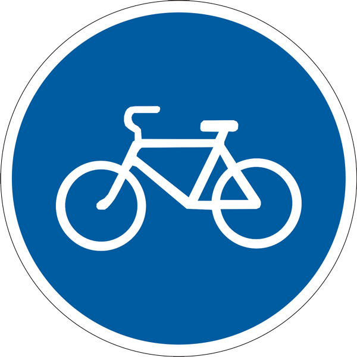
4.12
видимість у напрямку руху – максимальна відстань, на якій з місця водія можна чітко розпізнати межі елементів дороги та розміщення учасників руху, що дає змогу водієві орієнтуватися під час керування транспортним засобом, зокрема для вибору безпечної швидкості та здійснення безпечного маневру;
вимушена зупинка – припинення руху транспортного засобу через його технічну несправність чи небезпеку, яка спричинена вантажем, який перевозиться, станом учасника дорожнього руху, появою перешкоди для руху;
випередження – рух транспортного засобу із швидкістю, що перевищує швидкість попутного транспортного засобу, що рухається поряд по суміжній смузі;
власник транспортного засобу – фізична або юридична особа, яка володіє майновими правами на транспортний засіб, що підтверджується відповідними документами;
водій – особа, яка керує транспортним засобом і має посвідчення водія (посвідчення тракториста-машиніста, тимчасовий дозвіл на право керування транспортним засобом, тимчасовий талон на право керування транспортним засобом) відповідної категорії. Водієм також є особа, яка навчає керуванню транспортним засобом, перебуваючи безпосередньо в транспортному засобі;
габаритно-ваговий контроль – перевірка габаритних і вагових параметрів транспортного засобу (в тому числі механічного транспортного засобу), причепу і вантажу на предмет відповідності встановленим нормам щодо габаритів (ширина, висота від поверхні дороги, довжина транспортного засобу) та щодо навантаження (фактична маса, осьове навантаження), яка проводиться відповідно до встановленого порядку на стаціонарних або пересувних пунктах габаритно-вагового контролю;
газон – ділянка однорідної території із дерновим покривом, який штучно створюється шляхом посіву і вирощування дерноутворювальних трав (переважно багаторічних злаків) або одернування;
гальмовий шлях – відстань, що проходить транспортний засіб під час екстреного гальмування з початку здійснення впливу на механізм керування гальмовою системою (педаль, рукоятку) до місця його зупинки;
головна дорога – дорога з покриттям відносно ґрунтової або та, що позначається знаками 1.22, 1.23.1-1.23.4 і 2.3. Наявність на другорядній дорозі покриття безпосередньо перед перехрестям не прирівнює її за значенням до перехрещуваної;
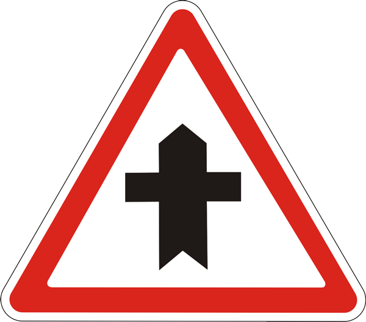
1.22
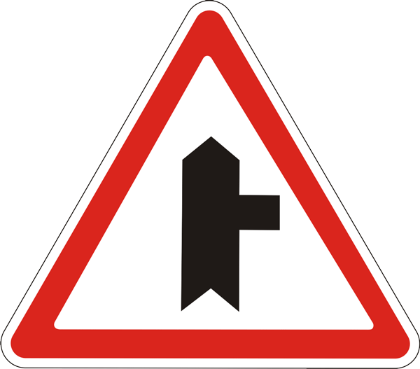
1.23.1
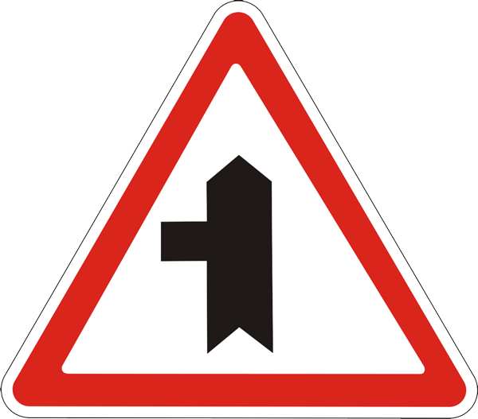
1.23.2
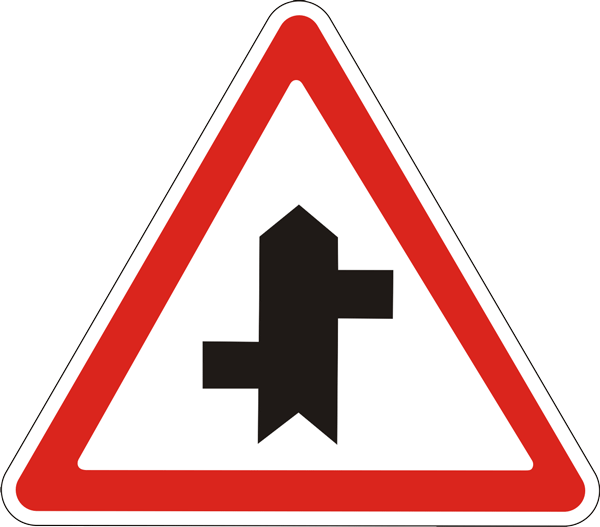
1.23.4
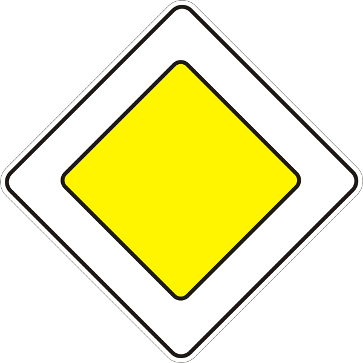
2.3.
дати дорогу – вимога до учасника дорожнього руху не продовжувати або не відновлювати рух, не здійснювати будь-яких маневрів (за винятком вимоги звільнити займану смугу руху), якщо це може примусити інших учасників дорожнього руху, які мають перевагу, змінити напрямок руху або швидкість;
денні ходові вогні – зовнішні світлові прилади білого кольору, передбачені конструкцією транспортного засобу, установлені спереду транспортного засобу і призначені для покращення видимості транспортного засобу під час його руху у світлий час доби;
дозволена максимальна маса – маса спорядженого транспортного засобу з вантажем, водієм і пасажирами, що встановлена технічною характеристикою транспортного засобу як максимально допустима. Дозволена максимальна маса автопоїзда – це сума дозволеної максимально допустимої маси кожного транспортного засобу, що входить до складу автопоїзда;
дорожньо-транспортна пригода – подія, що сталася під час руху транспортного засобу, внаслідок якої загинули або поранені люди чи завдані матеріальні збитки;
дорожні роботи – роботи, пов’язані з будівництвом, реконструкцією, ремонтом чи утриманням автомобільної дороги (вулиці), штучних споруд, споруд дорожнього водовідводу, інженерного облаштування, встановленням (ремонтом, заміною) технічних засобів організації дорожнього руху;
дорожні умови – сукупність факторів, що характеризують (з урахуванням пори року, періоду доби, атмосферних явищ, освітленості дороги) видимість у напрямку руху, стан поверхні проїзної частини (чистота, рівність, шорсткість, зчеплення), а також її ширину, величину похилів на спусках і підйомах, віражів і заокруглень, наявність тротуарів або узбіч, засобів організації дорожнього руху та їх стан;
дорожня обстановка – сукупність факторів, що характеризуються дорожніми умовами, наявністю перешкод на певній ділянці дороги, інтенсивністю і рівнем організації дорожнього руху (наявність та стан дорожньої розмітки, дорожніх знаків, дорожнього обладнання, світлофорів), які повинен ураховувати водій під час вибору швидкості, смуги руху та прийомів керування транспортним засобом;
експлуатація транспортного состава – транспортування тягачем причепа згідно з інструкцією щодо його використання (відповідність причепа тягачу, наявність страхового з’єднання, єдиної системи сигналізації, освітлення тощо);
естакада – інженерна споруда для руху транспортних засобів та (або) пішоходів, підняття однієї дороги над іншою у місці їх перетину, а також для створення дороги на певній висоті, яка не має з’їздів на іншу дорогу;
житлова зона – дворові території, а також частини населених пунктів, позначені дорожнім знаком 5.31;
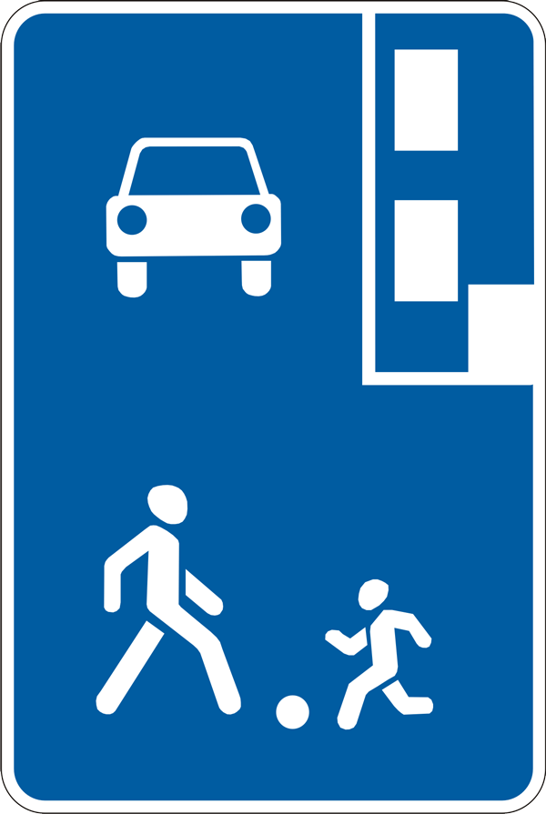
5.31
залишення місця дорожньо-транспортної пригоди – дії учасника дорожньо-транспортної пригоди, спрямовані на приховання факту такої пригоди або обставин її скоєння, які спричинили необхідність проведення поліцейськими заходів щодо встановлення (розшуку) цього учасника та (або) розшуку транспортного засобу;
залізничний переїзд – перехрещення дороги із залізничними коліями на одному рівні;
засліплення – фізіологічний стан водія внаслідок дії світла на його зір, коли водій об’єктивно не має можливості виявити перешкоди чи розпізнати межі елементів дороги на мінімальній відстані;
зупинка – припинення руху транспортного засобу на час до 5 хвилин або більше, якщо це необхідно для посадки (висадки) пасажирів чи завантаження (розвантаження) вантажу, виконання вимог цих Правил (надання переваги в русі, виконання вимог регулювальника, сигналів світлофора тощо);
колона пішоходів – організована група людей, які рухаються по проїзній частині в одному напрямку;
колона транспортних засобів – організована група з трьох і більше транспортних засобів, що разом рухаються в одному напрямку безпосередньо один за одним з постійно увімкненим ближнім світлом фар;
край проїзної частини (для нерейкових транспортних засобів) – видима умовна чи позначена дорожньою розміткою лінія на проїзній частині в місці її прилягання до узбіччя, тротуару, газону, розділювальної смуги, смуги для руху трамваїв, велосипедної або пішохідної доріжки;
крайнє положення на проїзній частині – положення транспортного засобу на відстані від краю проїзної частини (середини проїзної частини або розділювальної смуги), яка не дає можливості рухатися попутному транспортному засобу (у тому числі двоколісному) ще ближче до краю проїзної частини (середини проїзної частини або розділювальної смуги);
крісло колісне – спеціально сконструйований колісний засіб, який призначений для руху на дорозі осіб з інвалідністю або осіб, які відносяться до інших маломобільних груп населення. Крісло колісне має щонайменше двоє коліс та обладнується двигуном чи приводиться в рух мускульною силою людини;
легковий автомобіль – автомобіль з кількістю місць для сидіння не більше дев’яти, з місцем водія включно, який за своєю конструкцією та обладнанням призначений для перевезення пасажирів та їх багажу із забезпеченням необхідного комфорту та безпеки;
маневрування (маневр) – початок руху, перестроювання транспортного засобу в русі з однієї смуги на іншу, поворот праворуч чи ліворуч, розворот, з’їзд з проїзної частини, рух заднім ходом;
маршрутні транспортні засоби (транспортні засоби загального користування) – автобуси, мікроавтобуси, тролейбуси, трамваї і таксі, що рухаються за встановленими маршрутами та мають визначені місця на дорозі для посадки (висадки) пасажирів;
механічний транспортний засіб – транспортний засіб, що приводиться в рух з допомогою двигуна. Цей термін поширюється на трактори, самохідні машини і механізми, а також тролейбуси та транспортні засоби з електродвигуном потужністю понад 3 кВт;
мікроавтобус – одноповерховий автобус з кількістю місць для сидіння не більше сімнадцяти з місцем водія включно;
міст – споруда, призначена для руху через річку, яр та інші перешкоди, межами якої є початок і кінець пролітних споруд;
мопед – двоколісний транспортний засіб, який має двигун з робочим об’ємом до 50 куб.см або електродвигун потужністю до 4 кВт;
мотоцикл – двоколісний механічний транспортний засіб з боковим причепом або без нього, що має двигун з робочим об’ємом 50 куб.см і більше. До мотоциклів прирівнюються моторолери, мотоколяски, триколісні та інші механічні транспортні засоби, дозволена максимальна маса яких не перевищує 400 кг;
населений пункт – забудована територія, в’їзди на яку і виїзди з якої позначаються дорожніми знаками 5.45, 5.46, 5.47, 5.48;
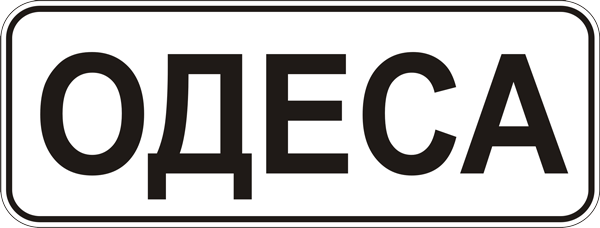
1.22
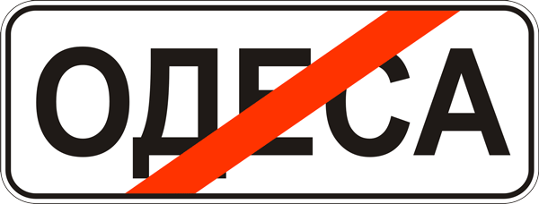
1.23.1
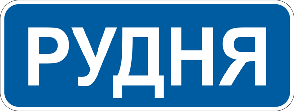
1.23.2
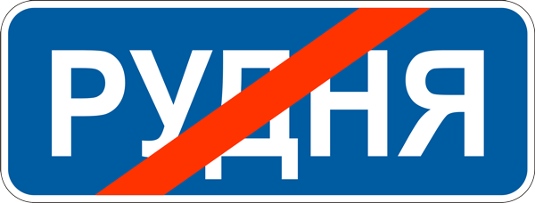
1.23.4
небезпека для руху – зміна дорожньої обстановки (у тому числі поява рухомого об’єкта, який наближається до смуги руху транспортного засобу чи перетинає її) або технічного стану транспортного засобу, яка загрожує безпеці дорожнього руху і змушує водія негайно зменшити швидкість або зупинитися. Окремим випадком небезпеки для руху є рух у межах смуги транспортного засобу іншого транспортного засобу назустріч загальному потоку;
недостатня видимість – видимість дороги в напрямку руху менше 300 м у сутінках, в умовах туману, дощу, снігопаду тощо;
обгін – випередження одного або кількох транспортних засобів, пов’язане з виїздом на смугу зустрічного руху;
обмежена оглядовість – видимість дороги в напрямку руху, яка обмежена геометричними параметрами дороги, придорожніми інженерними спорудами, насадженнями та іншими об’єктами, а також транспортними засобами;
оглядовість – об’єктивна можливість бачити дорожню обстановку з місця водія;
особа, яка рухається в кріслі колісному – особа з інвалідністю або особа, яка відноситься до інших маломобільних груп населення і самостійно рухається на дорозі в кріслі колісному;
острівець безпеки – технічний засіб регулювання дорожнього руху на наземних пішохідних переходах, конструктивно виділений над проїзною частиною дороги та призначений як захисний елемент для зупинки пішоходів під час переходу проїзної частини дороги. До острівця безпеки належить частина розділювальної смуги, через яку пролягає пішохідний перехід;
пасажир – особа, яка користується транспортним засобом і перебуває в ньому, але не причетна до керування ним;
перевага – право на першочерговий рух стосовно інших учасників дорожнього руху;
перевезення організованих груп дітей – одночасне перевезення десяти і більше дітей з керівником, відповідальним за їх супроводження під час поїздки (на групу з тридцяти і більше дітей призначається додатково медичний працівник);
перешкода для руху – нерухомий об’єкт у межах смуги руху транспортного засобу або об’єкт, що рухається попутно в межах цієї смуги (за винятком транспортного засобу, що рухається назустріч загальному потоку транспортних засобів) і змушує водія маневрувати або зменшувати швидкість аж до зупинки транспортного засобу;
перехрестя – місце перехрещення, прилягання або розгалуження доріг на одному рівні, межею якого є уявні лінії між початком заокруглень країв проїзної частини кожної з доріг. Не вважається перехрестям місце прилягання до дороги виїзду з прилеглої території;
пішохід – особа, яка бере участь у дорожньому русі поза транспортними засобами і не виконує на дорозі будь-яку роботу. До пішоходів прирівнюються також особи, які рухаються в кріслах колісних без двигуна, ведуть велосипед, мопед, мотоцикл, везуть санки, візок, дитячу коляску чи крісло колісне;
пішохідний перехід – ділянка проїзної частини або інженерна споруда, призначена для руху пішоходів через дорогу. Пішохідні переходи позначаються дорожніми знаками 5.35.1-5.37.2, дорожньою розміткою 1.14.1-1.14.3, пішохідними світлофорами. За відсутності дорожньої розмітки межі пішохідного переходу визначаються відстанню між дорожніми знаками або пішохідними світлофорами, а на перехресті за відсутності пішохідних світлофорів, дорожніх знаків та розмітки – шириною тротуарів чи узбіч.
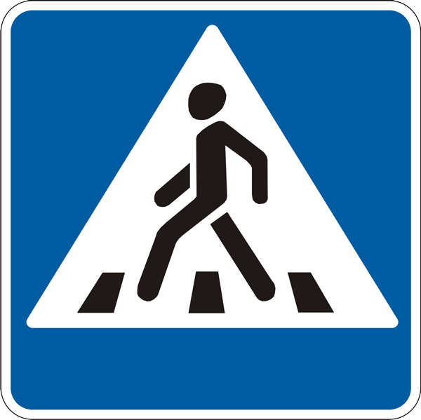
5.35.1

5.35.2
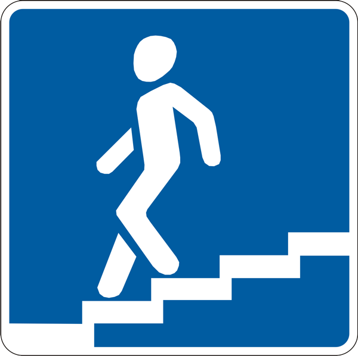
5.36.1
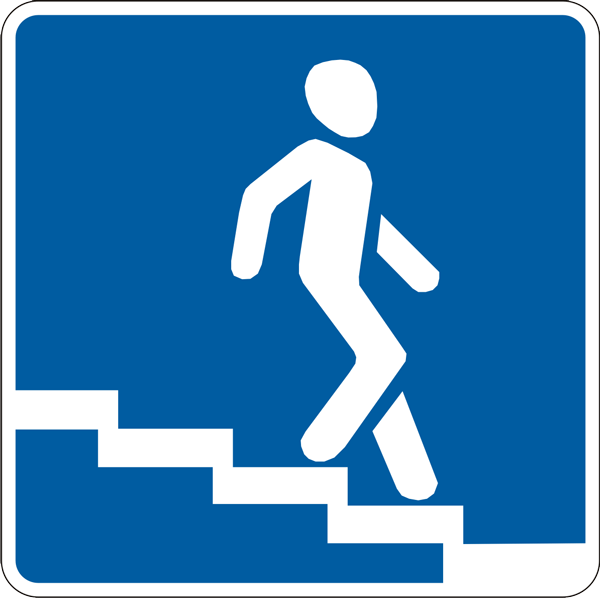
5.36.2
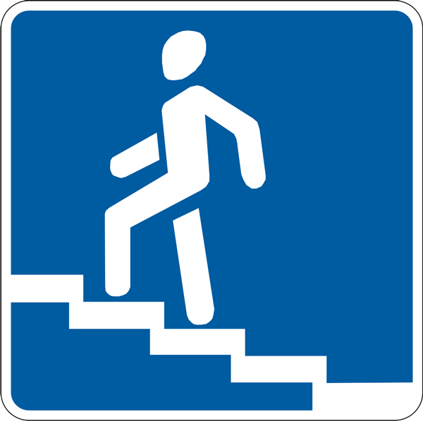
5.37.1
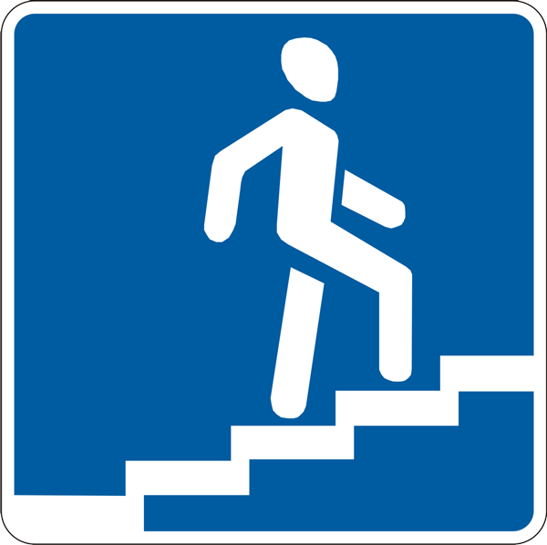
5.37.2
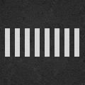
1.14.1
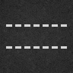
1.14.2
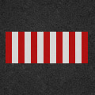
1.14.3
регульованим пішохідний перехід вважається, рух по якому регулюється світлофором чи регулювальником, нерегульованим – пішохідний перехід, на якому немає регулювальника, світлофори відсутні або вимкнені чи працюють у режимі миготіння жовтого сигналу;
пішохідна доріжка – доріжка з покриттям, призначена для руху пішоходів, виконана в межах дороги чи поза нею і позначена знаком 4.13;
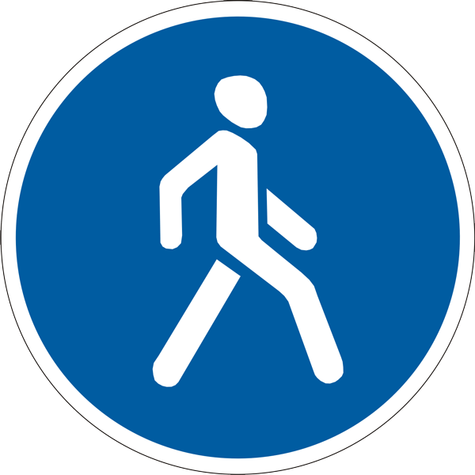
4.13
прилегла територія – територія, що прилягає до краю проїзної частини та не призначена для наскрізного проїзду, а лише для в’їзду до дворів, на стоянки, автозаправні станції, будівельні майданчики тощо або виїзду з них;
причіп – транспортний засіб, призначений для руху тільки в з’єднанні з іншим транспортним засобом. До цього виду транспортних засобів належать також напівпричепи і причепи-розпуски;
проїзна частина – елемент дороги, призначений для руху нерейкових транспортних засобів. Дорога може мати декілька проїзних частин, межами яких є розділювальні смуги;
регулювальник – поліцейський, що виконує регулювання дорожнього руху у форменому одязі підвищеної видимості з елементами із світлоповертального матеріалу за допомогою жезлу, свистка. До регулювальника прирівнюються працівники військової інспекції безпеки дорожнього руху, дорожньо-експлуатаційної служби, черговий на залізничному переїзді, поромній переправі, які мають відповідне посвідчення та нарукавну пов’язку, жезл, диск з червоним сигналом чи світлоповертачем, червоний ліхтар або прапорець та виконують регулювання у форменому одязі;
рейковий транспортний засіб – трамвай та платформи із спеціальним обладнанням, що рухаються трамвайними коліями. Усі інші транспортні засоби, що беруть участь у дорожньому русі, вважаються нерейковими;
розділювальна смуга – виділений конструктивно або за допомогою суцільних ліній дорожньої розмітки 1.1 або 1.2 елемент автомобільної дороги, який розділяє суміжні проїзні частини. Розділювальна смуга не призначена для руху або стоянки транспортних засобів. За наявності на розділювальній смузі тротуару по ньому дозволяється рух пішоходів;
смуга руху – поздовжня смуга на проїзній частині завширшки щонайменше 2,75 м, що позначена або не позначена дорожньою розміткою і призначена для руху нерейкових транспортних засобів;
стоянка – припинення руху транспортного засобу на час, більший ніж 5 хвилин, з причин, не пов’язаних з необхідністю виконання вимог цих Правил, посадкою (висадкою) пасажирів, завантаженням (розвантаженням) вантажу;
темна пора доби – частина доби від заходу до сходу сонця;
транспортний засіб – пристрій, призначений для перевезення людей і (або) вантажу, а також встановленого на ньому спеціального обладнання чи механізмів;
трамвайна колія – елемент дороги, призначений для руху рейкових транспортних засобів, який обмежується по ширині спеціально виділеним вимощенням трамвайної лінії або дорожньою розміткою. По трамвайній колії допускається рух нерейкових транспортних засобів відповідно до розділу 11 цих Правил;
тротуар – елемент дороги, призначений для руху пішоходів, який прилягає до проїзної частини або відокремлений від неї газоном;
удосконалене покриття – цементобетонне, асфальтобетонне, залізобетонне або армобетонне збірне покриття, бруківки, вимощені брущаткою і мозаїкою, збірне покриття з дрібнорозмірних бетонних плит, із щебеню і гравію, оброблених органічними і в’язкими матеріалами;
узбіччя – виділений конструктивно або суцільною лінією дорожньої розмітки елемент автомобільної дороги, який прилягає безпосередньо до зовнішнього краю проїзної частини, розташований з нею на одному рівні та не призначений для руху транспортних засобів, крім випадків, передбачених цими Правилами. Узбіччя може використовуватися для зупинки і стоянки транспортних засобів, руху пішоходів, мопедів, велосипедів (за відсутності тротуарів, пішохідних, велосипедних доріжок або у разі неможливості пересуватися по них), гужових возів (саней);\
учасник дорожнього руху – особа, яка бере безпосередню участь у процесі руху на дорозі як пішохід, водій, пасажир, погонич тварин, велосипедист, а також особа, яка рухається в кріслі колісному;
шляхопровід – інженерна споруда мостового типу над іншою дорогою (залізницею) в місці їх перетину, що забезпечує рух по ній на різних рівнях та дає можливість з’їзду на іншу дорогу.